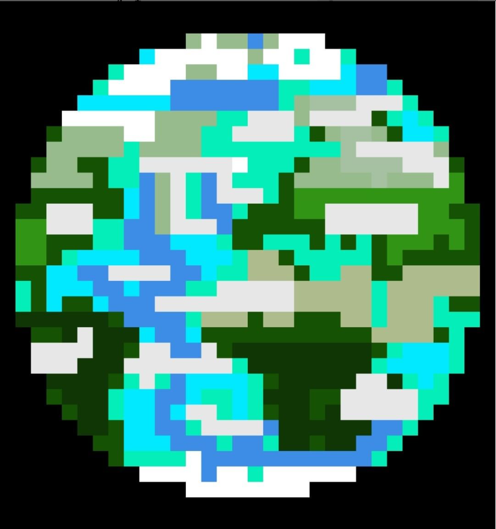

About My Animations
This section is about how I got into animation, and how you can too. I will cover some of the animations I have made.
How I Started Animating
I first started animating at around or before the age of seven. I used a program that my brother showed me, called Pivot Animator. This was a Flash Player app that used figures with pivot points that would be moved around to make animations. It was not the best for fluid and natural animation, but it was good enough for me. I don't have any animations I made with this, but there are some examples of other people's work online.
That could've been the end. I could've stopped there, when I forgot about animation. However, about 5 years later, I got into game development, and had to make some pixel art for the game. I decided to buy a graphics tablet for this, A.K.A. a digital pen. I used this for the pixel art, but remembered my animations, and started to make pixel art animated.
Later, I found a program called Wick Editor. This was an online animation app for Vector animation. This is a type that has no blur or pixelation, just lines. With this website, I practiced my skills, making some short animations, as short as two seconds.
I also started making 3D models, also for my games. This lead me to discover Blender, a modeling app. I later used this to make 3D simulations and animations. One of these is below. At some time around here, I made a YouTube channel, and published some of my animations. I used this channel as a way to share my animations, and some video game playing footage. The animation on the front of my website homepage got over 300 views on YouTube.